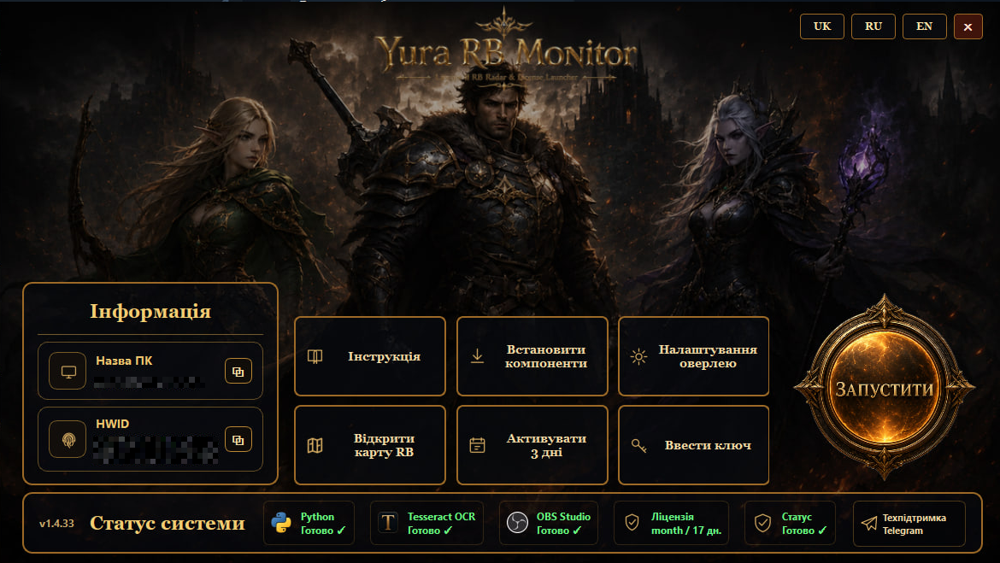
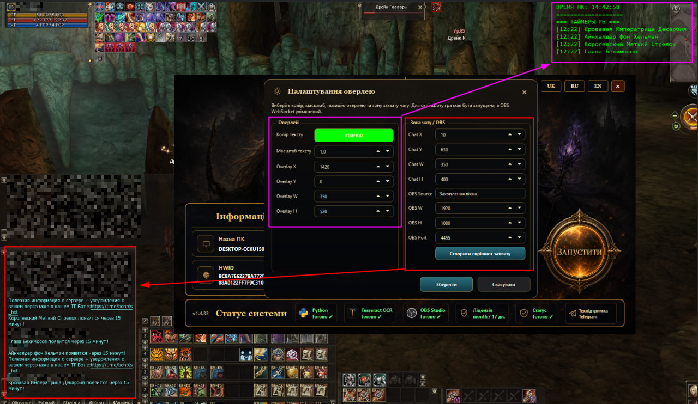
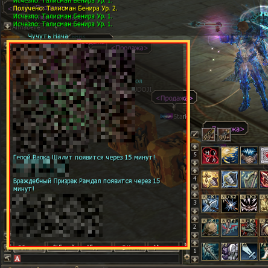

Raid Boss timers and shared online map for Lineage II.
Yura RB Monitor reads visible system chat through OBS/OCR, detects Raid Boss messages, starts respawn timers, shows an in-game overlay and synchronizes active RB timers on a shared online map.
Trial and paid license keys are handled by the launcher. The client is distributed as a Windows ZIP package.

What it does
A tool for Lineage II Raid Boss monitoring with shared timers for clan, party or server usage.
OBS/OCR chat detection
Reads the configured chat capture zone through OBS and detects Raid Boss respawn messages without controlling your character.
In-game overlay
Active RB timers are shown over the game window. You can configure position, text color, scale and size.
Shared online map
When one user detects a boss message, the active timer can be visible to everyone on the online map.
Launcher licensing
Trial access, paid keys, license status checks and program launch are handled through a clean launcher UI.
Search and preview
Quickly search an RB on the map, preview its location and keep only active global timers visible.
High Five RB workflow
Built around Lineage II RB messages, respawn timers and practical map navigation.
Screenshots
Launcher, overlay settings and chat capture example.


How to install
Get the latest Windows package from GitHub Releases.
Do not run the EXE directly from the archive. Extract the full folder first.
Activate the trial or enter your license key.
Select the OBS source, chat capture zone, overlay position and start monitoring.
License
The launcher supports a 3-day trial and paid license keys. To get a key, contact Telegram support.